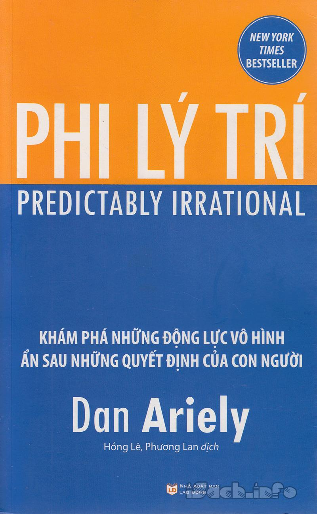

« Back
Phi Lý Trí
By Dan Ariely

Sức Mạnh Của Những Động Lực Vô Hình.
Giới Thiệu.
Chương 1 : Sự Thật Về Tính Tương Đối.
Chương 2 : Quan Điểm Sai Lầm Về Cung Và Cầu.
Chương 3 : Cái Giá Của Miễn Phí.
Chương 4 : Cái Giá Của Các Quy Chuẩn Xã Hội.
Chương 5 : Ảnh Hưởng Của Sự Hưng Phấn.
Chương 6 : Vấn Đề Của Sự Trì Hoãn Và Tự Kiểm Soát.
Chương 7 : Cái Giá Của Sự Sở Hữu.
Chương 8 : Luôn Để Ngỏ Các Lựa Chọn.
Chương 9 : Hiệu Ứng Của Sự Mong Đợi.
Chương 10 : Sức Mạnh Của Giá Cả.
Chương 11 : Tác Động Của Bối Cảnh Đến Tính Cách, Phần I.
Chương 12 : Tác Động Của Bối Cảnh Đến Tính Cách, Phần II.
Chương 13 : Bia Và Những Bữa Ăn Miễn Phí.
Chú Thích.